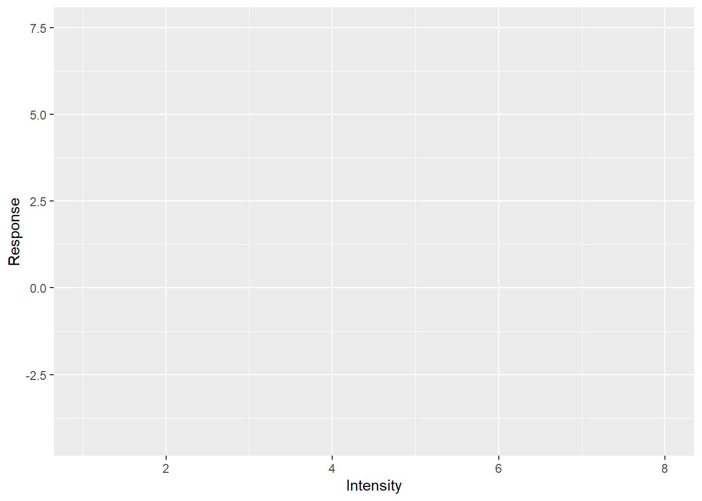
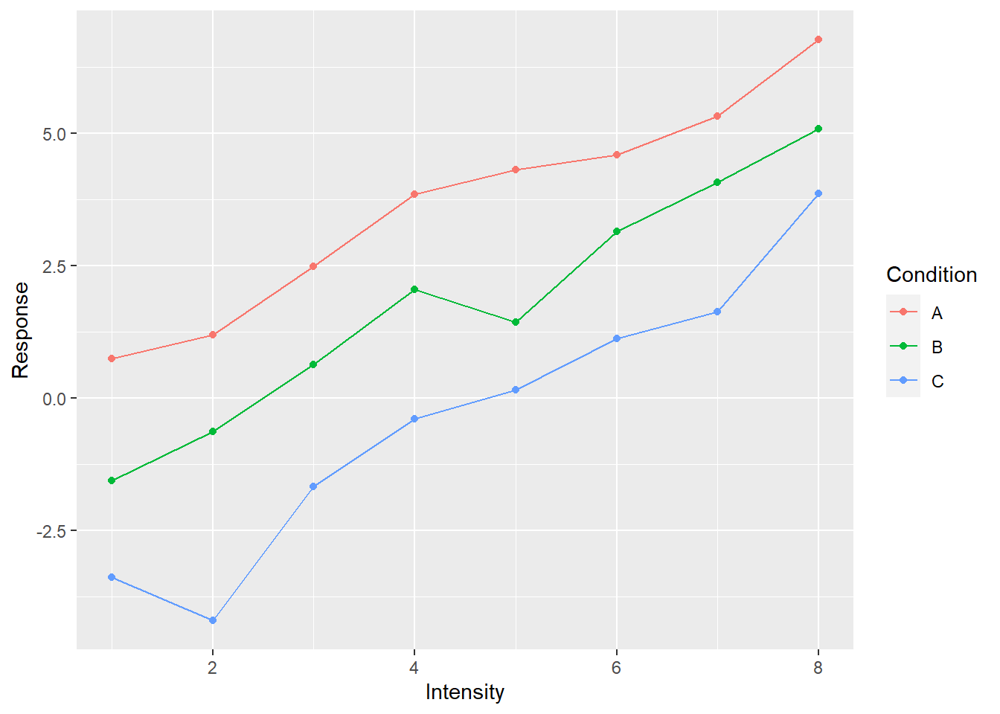
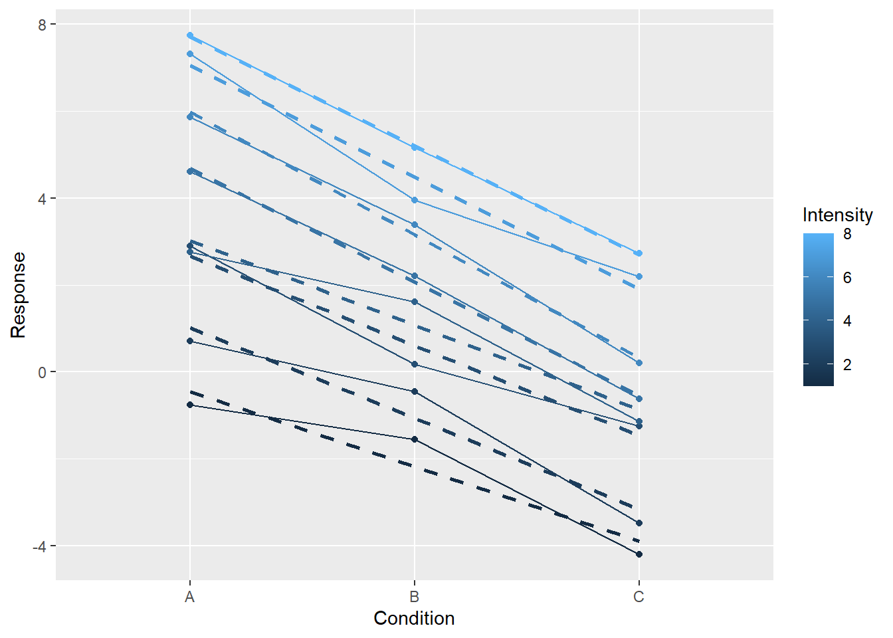
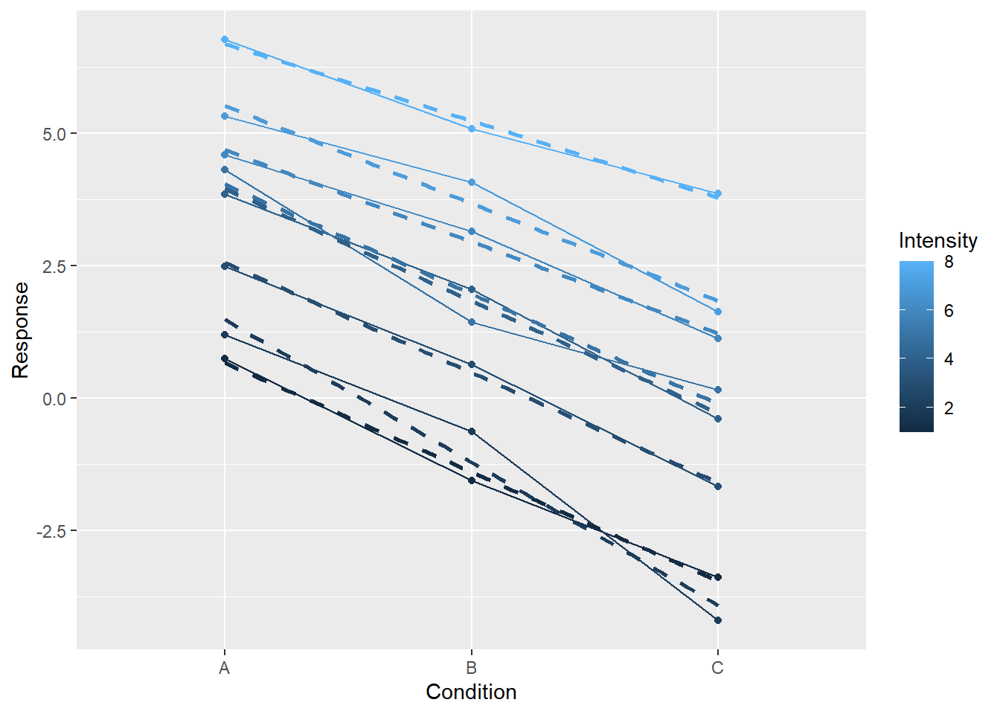
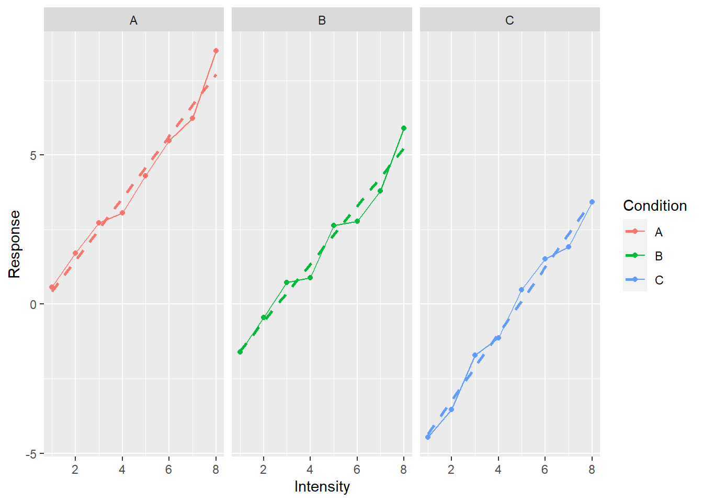

Seminar 5 ggplot2: Grammar of Graphics
In previous chapters, you have learned about tables that are the main way of representing data in psychological research and in R. In the following ones, you will learn how to manipulate data in these tables: change it, aggregate or transform individual groups of data, use it for statistical analysis. But before that you need to understand how to store your data in the table in the optimal way. First, I will introduce the idea of tidy data, the concept that gave Tidyverse its name. Next, we will see how tidy data helps you visualize relationships between variables. Don’t forget to download the notebook.
5.1 Tidy data
The tidy data follows three rules:
- variables are in columns,
- observations are in rows,
- values are in cells.
This probably sound very straightforward to the point that you wonder “Can a table not by tidy?” As a matter of fact a lot of typical results of psychological experiments are not tidy. Imagine an experiment where participants rated a face on symmetry, attractiveness, and trustworthiness. Typically (at least in my experience), the data will stored as follows:
| Participant | Face | Symmetry | Attractiveness | Trustworthiness |
|---|---|---|---|---|
| 1 | M1 | 6 | 4 | 3 |
| 1 | M2 | 4 | 7 | 6 |
| 2 | M1 | 5 | 2 | 1 |
| 2 | M2 | 3 | 7 | 2 |
This is a very typical table optimized for humans. A single row contains all responses about a single face, so it is easy to visually compare responses of individual observers. Often, the table is even wider so that a single row holds all responses from a single observer (in my experience, a lot of online surveys produce data in this format).
| Participant | M1.Symmetry | M1.Attractiveness | M1.Trustworthiness | M2.Symmetry | M2.Attractiveness | M2.Trustworthiness |
|---|---|---|---|---|---|---|
| 1 | 6 | 4 | 3 | 4 | 7 | 6 |
| 2 | 5 | 2 | 1 | 3 | 7 | 2 |
So, what is wrong with it? Don’t we have variables in columns, observations in rows, and values in cells? Not really. You can already see it when comparing the two tables above. The face identity is a variable, however, in the second table it is hidden in column names. Some columns are about face M1, other columns are about M2, etc. So, if you are interested in analyzing symmetry judgments across all faces and participants, you will need to select all columns that end with .Symmetry and figure out a way to extract the face identity from columns’ names. Thus, face is a variable but is not a column in the second table.
Then, what about the first table, which has Face as a column, is it tidy? The short answer: Not really but that depends on your goals as well! In the experiment, we collected responses (these are numbers in cells) for different type of judgments. The latter are a variable but it is hidden in column names. Thus, a tidy table for this data would be
| Participant | Face | Judgment | Response |
|---|---|---|---|
| 1 | M1 | Symmetry | 6 |
| 1 | M1 | Attractiveness | 4 |
| 1 | M1 | Trustworthiness | 3 |
| 1 | M2 | Symmetry | 4 |
| 1 | M2 | Attractiveness | 7 |
| 1 | M2 | Trustworthiness | 6 |
| 2 | M1 | Symmetry | 5 |
| 2 | M1 | Attractiveness | 2 |
| 2 | M1 | Trustworthiness | 1 |
| 2 | M2 | Symmetry | 3 |
| 2 | M2 | Attractiveness | 7 |
| 2 | M2 | Trustworthiness | 2 |
This table is (very) tidy and it makes it easy to group data by every different combination of variables (e.g., by face and judgment, by participant and judgment), perform statistical analysis, etc. However, it may not always be the best way to represent the data. For example, if you would like to model Trustworthiness using Symmetry and Attractiveness as predictors, when the first table is more suitable. At the end, the table structure must fit your needs, not the other way around. Still, what you probably want is a tidy table because it is best suited for most things you will want to do with the data and because it makes it easy to transform the data to match your specific needs (e.g., going from the third table to the first one via pivoting).
Most data you will get from experiments will not be tidy. We will spent quite some time learning how to tidy it up but first let us see how an already tidy data makes it easy to visualize relationships in it.
5.2 ggplot2
ggplot2 package is my main tool for data visualization in R. ggplot2 tends to make really good looking production-ready plots (this is not a given, a default-looking Matlab plot is, or used to be when I used Matlab, pretty ugly). Hadley Wickham was influenced by works of Edward Tufte when developing ggplot2. Although the aesthetic aspect goes beyond our seminar, if you will need to visualize data in the future, I strongly recommend reading Tufte’s books. In fact, it is such an informative and aesthetically pleasing experience that I would recommend reading them in any case.
More importantly, ggplot2 uses a grammar-based approach of describing a plot that makes it conceptually different from most other software such as Matlab, Matplotlib in Python, etc. You need to get used to it but once you do, you probably will never want to go back.
A plot in ggplot2 is described in three parts:
- Aesthetics: Relationship between data and visual properties that define working space of the plot (which variables map on individual axes, color, size, fill, etc.).
- Geometrical primitives that visualize your data (points, lines, error bars, etc.) that are added to the plot.
- Other properties of the plot (scaling of axes, labels, annotations, etc.) that are added to the plot.
You always need the first one. But you do not need to specify the other two, even though a plot without geometry in it looks very empty. Let us start with a very simple artificial example table below. I simulate a response as \[Response = Normal(\mu=1, \sigma=0.2) - \\ Normal(\mu=2*ConditionIndex, \sigma=0.4) + \\ Normal(\mu=Intensity, \sigma=0.4)\]
| Condition | Intensity | Response |
|---|---|---|
| A | 1 | 0.5745482 |
| B | 1 | -1.6034349 |
| C | 1 | -4.4714142 |
| A | 2 | 1.7050405 |
| B | 2 | -0.4478978 |
| C | 2 | -3.5379554 |
| A | 3 | 2.7336548 |
| B | 3 | 0.7345070 |
| C | 3 | -1.7176451 |
| A | 4 | 3.0506642 |
| B | 4 | 0.8929733 |
| C | 4 | -1.1331656 |
| A | 5 | 4.3021775 |
| B | 5 | 2.6404774 |
| C | 5 | 0.4895676 |
| A | 6 | 5.4718571 |
| B | 6 | 2.7735864 |
| C | 6 | 1.5125442 |
| A | 7 | 6.2254941 |
| B | 7 | 3.8016016 |
| C | 7 | 1.9171075 |
| A | 8 | 8.4859454 |
| B | 8 | 5.8939711 |
| C | 8 | 3.4180811 |
We plot this data by 1) defining aesthetics (mapping Intensity on to x-axis, Responseon y-axis, and Condition on color) and 2) adding lines to the plot (note the plus38 in + geom_line()).
ggplot(data=simple_tidy_data, aes(x = Intensity, y = Response, color=Condition)) +
geom_line()
As I already wrote, technically, the only thing you need to define is aesthetics, so let us not add anything to the plot (we drop the +geom_line()).
ggplot(data=simple_tidy_data, aes(x = Intensity, y = Response, color=Condition))
Told you it will look empty and yet you can already see ggplot2 in action. Notice that axes are labeled and their limits are set. You cannot see the legend (they are not plotted without corresponding geometry) but it is also ready behind the scenes. This is because our initial call specified the most important part: how individual variables map on various properties even before we tell ggplot2 which visuals we will use to plot the data. When we specified that x-axis will represent the Intensity, ggplot2 figured out the range of values, so it knows where it is going to plot whatever we decide to plot. Points, lines, bars, error bars and what not will span only that range. Same goes for other properties such as color. We wanted color to represent the condition. Again, we may not know what exactly we will be plotting (points, lines?) or even how many different visuals we will be adding to the plot (just lines? points + lines? points + lines + linear fit?) but we do know that whatever visual we add, if it can have color, its color must represent condition for that data point. The beauty of ggplot2 is that it analyses your data and figures out how many colors you need and is ready to apply them consistently to all visuals you will add later. It will ensure that all points, bars, lines, etc. will have consistent coordinates scaling, color, size, fill mapping that are the same across the entire plot. This may sound trivial but typically (e.g., Matlab, Matplotlib), it is your job to make sure that all these properties match and that they represent the same value across all visual elements. And this is a pretty tedious job, particularly when you decide to change your mappings and have to redo all individual components by hand. In ggplot2, this dissociation between mapping and visuals means you can tinker with one of them at a time. E.g. keep the visuals but change grouping or see if effect of condition is easier to see via line type, size or shape of the point? Or you can keep the mapping and see whether adding another visual will make the plot easier to understand. Note that some mapping also groups your data, so when you use group-based visual information (e.g., a linear regression line) it will know what data belongs together and so will perform this computation per group.
Let us see how you can keep the relationship mapping but add more visuals. Let us add both lines and points.
ggplot(data=simple_tidy_data, aes(x = Intensity, y = Response, color=Condition)) +
geom_line() +
geom_point() # this is new!
In the plot above, we kept the relationship between variables and properties but said “Oh, and throw in some points please”. And ggplot2 knows how to add the points so that they appear at proper location and in proper color. But we want more!
ggplot(data=simple_tidy_data, aes(x = Intensity, y = Response, color=Condition)) +
geom_line() +
geom_point() +
# a linear regression over all dots in the group
geom_smooth(method="lm", formula = y ~ x, se=FALSE, linetype="dashed") 
Now we added a linear regression line that helps us to better see the relationship between Intensity and Response. Again, we simply wished for another visual to be added (method="lm" means that we wanted to average data via linear regression with formula = y ~ x meaning that we regress y-axis on x-axis with no further covariates, se=FALSE means no standard error stripe, linetype="dashed" just makes it easier to distinguish linar fit from the solid data line).
Or, we can keep the visuals but see whether changing mapping would make it more informative (we need to specify group=Intensity as continuous data is not grouped automatically).
ggplot(data=simple_tidy_data, aes(x = Condition, y = Response, color=Intensity, group=Intensity)) +
geom_line() +
geom_point() +
geom_smooth(method="lm", se=FALSE, formula = y ~ x, linetype="dashed")
Or, we can check whether splitting into several plots helps.
ggplot(data=simple_tidy_data, aes(x = Intensity, y = Response, color=Condition)) +
geom_line() +
geom_point() +
geom_smooth(method="lm", formula = y ~ x, se=FALSE, linetype="dashed") +
facet_grid(. ~ Condition) # makes a separate subplot for each group Again, note that all three plots live on the same scale for x- and y-axis, making them easy to compare (you fully appreciate this magic if you ever struggled with ensuring optimal and consistent scaling by hand in Matlab). I went through so many examples to stress how ggplot allows you to think about the aesthetics of variable mapping independently of the actual visual representation (and vice versa).
Now lets us explore ggplot2 by doing exercises. I recommend using ggplot2 reference page and cheatsheet when you are doing the exercises.
5.3 Auto efficiency: continuous x-axis
We start by visualizing how car efficiency, measured as miles-per-gallon, is affected by various factors such as production year, size of the engine, type of transmission, etc. The data is in the table mpg, which is part of the ggplot2 package. Thus, you need to first import the library and then load the table via data() function. Take a look at the table description to familiarize yourself with the variables.
First, let us look at the relationship between car efficiency in the city cycle (cty), engine displacement (displ), and drive train type (drv) using color points. Reminder, the call should look as
ggplot(data_table_name, [aes](https://ggplot2.tidyverse.org/reference/aes.html)(x = var1, y = var2, color = var3, shape = var4, ...)) +
geom_primitive1() +
geom_primitive2() +
...Think about which variables are mapped on each axes and which is best depicted as color.
Do exercise 1.
Do you see any clear dependence? Let us try to making it more evident by adding geom_smooth geometric primitive.
Do exercise 2.
Both engine size (displacement) and drive train have a clear effect on car efficiency. Let us visualize the number of cylinders (cyl) as well. Including it by mapping it on the size of geometry.
Do exercise 3.
Currently, we are mixing together cars produced at different times. Let us visually separate them by turning each year into a subplot via facet_wrap function.
Do exercise 4.
The dependence you plotted does not look linear but instead is saturating at certain low level of efficiency. This sort of dependencies could be easier to see on a logarithmic scale. See functions for different scales and use logarithmic scaling for y-axis.
Do exercise 5.
Note that by now we managed to include five variables into our plots. We can continue this by including transmission or fuel type but that would be pushing it, as too many variables can make a plot confusing and cryptic. Instead, let us make it prettier by using more meaningful axes labels (xlab(), ylab() functions) and adding a plot title (labs).
Do exercise 6.
5.4 Auto efficiency: discrete x-axis
The previous section use a continuous engine displacement variable for x-axis (at least that is my assumption on how you mapped the variables). Frequently, you need to plot data for discrete groups: experimental groups, conditions, treatments, etc. Let us practice on the same mpg data set but visualize relationship between the drive train (drv) and highway cycle efficiency (hwy). Start by using point as visuals.
Do exercise 7.
One problem with the plot is that all points are plotted at the same x-axis location. This means that if two points share the location, they overlap and appear as just one dot. This makes it hard to understand the density: one point can mean one point, or two, or a hundred. A better way to plot such data is by using box or violin plots. Experiment by using them instead of points.
Do exercise 8.
Again, let’s up the ante and split plots via both number of cylinders and year of manufacturing. Use facet_grid function to generate grid of plots.
Do exercise 9.
Let us again improve our presentation by using better axes labels and figure title.
Do exercise 10.
5.5 Mammals sleep: single variable
Now lets us work on plotting a distribution for a single variable using mammals sleep dataset. For this, you need to map sleep_total variable on x-axis and plot a histogram. Explore the available options, in particular bins that determines the bins number and, therefore, their size. Note that there is no “correct” number of bins to use. ggplot2 defaults to 30 but a small sample would be probably better served with fewer bins and, vice versa, with a large data set you can afford hundred of bins.
Do exercise 11.
Using a histogram gives you exact counts per each bin. However, the appearance may change quite dramatically if you would use fewer or more bins. An alternative way to represent the same information is via smoothed density estimates. They use a sliding window and compute an estimate at each point but also include points around it and weight them according to a kernel (e.g., a Gaussian one). This makes the plot look smoother and will mask sudden jumps in density (counts) as you, effectively, average over many bins. Whether this approach is better for visualizing data depends on the sample you have and message you are trying to get across. It is always worth checking both (just like it is worth checking different number of bins in histogram) to see which way is the best for your specific case.
Do exercise 12.
Let us return to using histograms and plot a distribution per vore variable (it is carnivore, omnivore, herbivore, or NA). You can map it on the fill color of the histogram, so that each vore kind will be binned separately.
Do exercise 13.
The plot may look confusing because by default ggplot2 colors values for each group differently but stacks all of them together to produce the total histogram counts. One way to disentangle the individual histograms is via facet_grid function. Use it to plot vore distribution in separate rows.
Do exercise 14.
That did the trick but there is an alternative way to plot individual distributions on the same plot by setting position argument of geom_histogram to "identity" (it is "stack" by default).
Do exercise 15.
Hmm, shouldn’t we have more carnivores, what is going on? Opacity is the answer. A bar “in front” occludes any bars that are “behind” it. Go back to the exercise and fix that by specifying alpha argument that controls transparency. It is 1 (completely opaque) by default and can go down to 0 (fully transparent as in “invisible”), so see which intermediate value works the best.
5.6 Mapping for all visuals versus just one visual
In the previous exercise, you assigned a constant value to alpha (transparency) argument. You could do this in two places, inside of either ggplot() or geom_histogram() call. In the former case, you would have set alpha level for all geometric primitives on the plot, whereas in the latter you do it only for the histogram. To better see the difference, reuse your code for plotting city cycle efficiency versus engine size (should be exercise #6) and set alpha either for all visuals (in ggplot2) or in some visuals (e.g. only for points) to see the difference.
Do exercise 16.
5.7 Mapping on variables versus constants
In the previous exercise, you assigned a constant value to alpha (transparency) argument. However, transparency is just a property just like x, color, or size. Thus, there are two ways you can use them:
- inside
aes(x=column), wherecolumnis column in the table you supplied viadata= - outside of
aesby statingx=value, where value is some constant value or a variable that is not in the table.
Test this but setting the size in the previous plot to a constant outside of aesthetics or to a variable inside of it.
Do exercise 17.
5.8 Themes
Finally, if you are not a fan of the way the plots look, you can quickly modify this by using some other theme. You can define it yourself (there are lots of options you can specify for your theme) or can use one of the ready-mades. Explore the latter option, find the one you like the best.
Do exercise 18.
5.9 You ain’t seen nothing yet
What you explored is just a tip of the iceberg. There are many more geometric primitive, annotations, scales, themes, etc. It will take an entire separate seminar to do ggplot2 justice. However, the basics will get you started and you can always consult reference, books (see below), or me once you need more.
5.10 Further reading
If plotting data is part of your daily routine, I recommend reading ggplot2 book. It gives you an in-depth view of the package and goes through many possibilities that it offers. You may need all of them but I find useful to know that they exists (who knows, I might need them one day). Another book worth reading is Data Visualization: A Practical Introduction. by Kieran Healy.
5.11 Extending ggplot2
There are 102 (as of 21.10.2021) extensions that you find at ggplot2 website. They add more ways to plot your data, more themes, animated plots, etc. If you feel that ggplot2 does not have the geometric primitives you need, take a look at the gallery and, most likely, you will find something that fits your bill.
One package that is not in the gallery is patchwork. It was created “to make it ridiculously simple to combine separate ggplots into the same graphic”. It is a bold promise but authors do make good on it. It is probably the easiest way to combine multiple plots but you can also consider cowplot and gridExtra packages.
5.12 ggplot2 cannot do everything
There are many different plotting routines and packages for R but I would recommend to use ggplot2 as your main tool. However, that does not mean that it must be your only tool, after all, CRAN is brimming with packages. In particular, ggplot2 is built for plotting data from a single tidy table, meaning it is less optimal for plotting data in other cases. E.g., you can use it to combine information from several tables in one plot but things become less automatic and consistent. Similarly, you can plot data which is stored in non-tidy tables or even in individual vectors but that makes it less intuitive and more convoluted. No package can do everything and ggplot2 is no exception.
One of a potentially confusing bits is usage of
+in ggplot2 but of pipe%>%everywhere else. The difference is deliberate and fundamental. Pipe%>%passes the output to the next function,+adds something to the already existing plot.↩︎